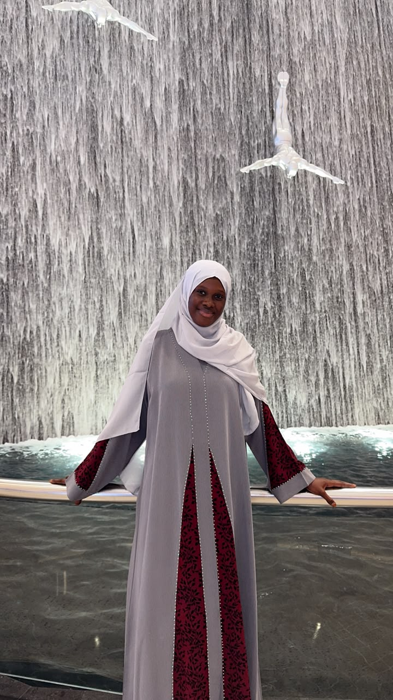

Bienvenue sur mon portfolio
Découvrez mes projets et mon parcours.
À propos
Je me presente Khady Faye. Je suis étudiante à l'UVS et je me forme à également en développement web à GOMYCODE.
Je suis passionnée par le numerique, j'aime apprendre de nouvelles choses, développer mes compétences et donner vie à mes
idées.
Mon objectif est de créer des projets utiles et de contribuer à la digitalisation des commerces graces aux technologies web.

Mes projets
| Nom du projet | Description | Lien |
|---|---|---|
| Mon premier projet | Un univers d'élégance ou les foulards en soie et abayas raffinés se rencontrent,pensé pour la femme qui chérit la tradition et incarne la grace intemporelle. | Voir le projet |
| Mon deuxième projet | Darou Salam Manager est une plateforme de gestion commerciale conçue pour simplifier le suivi des ventes, la gestion des stocks et le suivi des paiements, afin d’offrir une gestion de boutique plus organisée, efficace et sereine. | Voir le projet |
| Mon troisième projet | MDF Business Groupe est un site web conçu pour présenter une gamme de produits sanitaires, faciliter les commandes des clients et offrir une expérience d’achat simple, pratique et professionnelle. | Voir le projet |